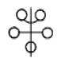
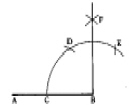
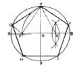
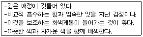
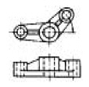

컴퓨터그래픽스운용기능사 (2005-07-17 기출문제)
1과목: 산업디자인 일반
1. 상업공간의 실내 디자인에서 유의해야 할 점이 아닌 것은?
- 사용 목적을 정확하게 파악해야 한다.
- 모든 공정 과정을 디자이너가 자유로이 처리할 수 있도록 해야 한다.
- 주거 공간에 비하여 실용성이 중시되어야 한다.
- 다른 상업 공간과 구별되도록 독특한 개성을 지닌 실내 디자인이 되어야 한다.
(정답률: 71%)

2. 바우하우스의 올바른 설명이 아닌 것은?
- 조형교육과 기술교육을 함께 가르쳤다.
- 1919년 월터 그로피우스가 설립한 디자인 대학이다.
- 대표적인 작가로는 헨리 반 데 벨데, 아더 맥머드 등이 있다.
- 공업시스템과 예술가 사이의 갈등을 해결하려고 노력했다.
(정답률: 66%)
3. 에디토리얼 디자인(editorial design)의 요소가 아닌 것은?
- 포토그래피(photography)와 일러스트레이션(illustration)
- 슈퍼 그래픽스(supergraphics)
- 레이아웃(layout)
- 타이포그래피(typography)
(정답률: 66%)
4. 다음 그림과 같은 대칭은?

- 역대칭
- 방사대칭
- 점대칭
- 선대칭
(정답률: 88%)
5. 기초적 단계에서 형태감과 균형을 파악하기 위해 제작하는 모델은?
- 프레젠테이션 모델
- 더미목업
- 스터디 모델
- 외관 모델
(정답률: 50%)
6. 다음 설명 중 마케팅에 대한 올바른 설명이 아닌 것은?
- 마케팅이란 생활수준의 창조와 배달이다.
- 마케팅이란 소비자 만족이라는 궁극적 목적을 향해 모든 노력을 지향하는 것이다.
- 마케팅이란 기업가의 필요와 욕구를 이익취득의 목적하에 고객을 분석, 통제하는 것이다.
- 마케팅이란 조직의 목표를 달성할 가격결정, 판매촉진 등에 대한 계획수립, 수행과정이다.
(정답률: 62%)
7. 제품의 수명 주기에서 매출이 다소 감소 될 수 있으므로 유통비용의 절감 및 메시지 작성, 광고시점, 광고의 슬로건 등을 적절히 변화시키는 단계는?
- 성숙기
- 성장기
- 도입기
- 쇠퇴기
(정답률: 75%)
8. 수직, 수평의 화면 분할, 3원색과 무채색의 구성 특성을 보이는 근대 디자인 운동은?
- 아르누보(art nouveau)
- 드 스틸(de stijl)
- 유겐드 스틸(Jugendstil)
- 시세션(Secession)
(정답률: 50%)
9. 다음 중 환경디자인 영역과 거리가 먼 것은?
- 조경디자인
- 포장디자인
- 실내디자인
- 건축디자인
(정답률: 88%)
10. 다음 중에서 제품디자인의 스케치 목적과 거리가 가장 먼 것은?
- 이미지의 고착
- 이미지의 발전
- 이미지의 판단
- 이미지의 분리
(정답률: 72%)
11. 다음 중 실내디자인에서 추구하는 궁극적인 목표와 일치하는 것은?
- 유행성, 보편성, 개성
- 효율성, 아름다움, 개성
- 기능성, 효율성, 보편성
- 재료성, 아름다움, 유행성
(정답률: 53%)
12. 기하학적 도형의 기본 3가지 형에 포함되지 않는 것은?
- 삼각형
- 다각형
- 정원
- 정사각형
(정답률: 68%)
13. 포장의 기능과 거리가 먼 것은?
- 생산에서 소비자까지의 유통 과정에서 제품을 보호해 주는 기능을 가질 것
- 소비자의 구매를 자극할 수 있는 심미성을 가질 것
- 과학적이고 독특한 시각적 특징을 가질 것
- 제품의 내용이나 정보를 알려주는 전달성을 가질 것
(정답률: 84%)
14. 공간을 입체적으로 표현한 도면으로 실내디자인 분야에서 고객과의 의사전달 수단으로 많이 이용하는 것은?
- 투시도
- 평면도
- 입면도
- 단면도
(정답률: 63%)
15. 다음 그림과 관계가 있는 것은?
- 군화의 법칙
- 도형과 바탕의 반전
- 객관적 태도의 법칙
- 공동운명의 법칙
(정답률: 89%)
16. 의미하는 내용의 형태를 상징적으로 시각화한 것으로 언어를 초월해서 직감적으로 이해할 수 있도록 만들어진 그래픽 심벌을 무엇이라고 하는가?
- 로고타입(Logotype)
- 타이포그래피(Typography)
- 픽토그램(Pictogram)
- 일러스트레이션(Illustration)
(정답률: 67%)
17. 다음 중 유사, 대비, 균일, 강약 등이 포함되어 나타내는 디자인의 원리는?
- 통일
- 조화
- 균형
- 리듬
(정답률: 60%)
18. 효과적 광고제작에 응용되는 AIDMA 법칙에 해당하지 않는 것은?
- 주목(Attention)
- 동일(Identity)
- 욕망(Desire)
- 기억(Memory)
(정답률: 81%)
19. 디자인 소재를 찾을 때 가장 먼저 해야 하는 기본적인 방법은?
- 묘사
- 관찰
- 편화
- 분해
(정답률: 91%)
20. 다음 중 신문광고 매체로서의 특성에 속하지 않는 것은?
- 신뢰성
- 안전성
- 속보성
- 편의성
(정답률: 51%)
2과목: 색채 및 도법
21. 먼셀의 색 입체를 수평으로 절단했을 때 나타나는 것은?
- 등채도면
- 등명도면
- 등색상면
- 등보색면
(정답률: 56%)
22. 색채와 감정에 대한 이미지 문제를 연구하는데 이용하는 것은?
- 색채요법
- 언어척도법
- 색채조절법
- 색채감상법
(정답률: 36%)
23. 다음 그림과 같은 수직선 긋기를 할 때 작도상 틀린 것은?

- 교점C는 임의로 잡는다.
- 선분BC의 길이로 D점을 잡는다.
- 선분CD = 선분DE 이다.
- F점을 임의로 잡는다.
(정답률: 56%)
24. 제도에서 두께의 기호는?
- R
- S
- ø
- t
(정답률: 88%)
25. 다음의 색채조화에 대한 설명 중 틀린 것은?
- 강한 대비를 보이는 색 사이에 회색을 삽입하면 대립을 약화시킬 수 있다.
- 서로 잘 안 어울리는 색 사이에 회색을 삽입하면 대립이 더욱 심화 된다.
- 서로 대비되는 색 사이에 삽입되는 회색의 명도가 변함에 따라 전체 이미지가 변한다.
- 같은 대비라도 놓여지는 위치에 따라 전체 이미지가 달라진다.
(정답률: 69%)
26. 도면과 같이 원에 내접하는 정 5각형을 그리기 위해 E를 구하고자 한다. 맞는 것은?

- AB, CD를 긋고, FB를 3등분 한다.
- AB, CD를 긋고, OB를 2등분 한다.
- OC, OD를 긋고, OB를 2등분 한다.
- OC, OB를 긋고, OB를 2등분 한다.
(정답률: 74%)
27. 다음과 같은 특징을 가진 기법의 배색은?

- 개성적인 배색
- 정열적인 배색
- 지성적인 배색
- 명쾌한 배색
(정답률: 65%)
28. 색채는 크게 무채색과 유채색으로 구분할 수 있다. 무채색만으로 짝지어진 것은?
- Red-Yellow-White
- Yellow-Blue-Gray
- Yellow-White-Black
- White-Black-Gray
(정답률: 91%)
29. 대상물의 위치(소점)에 따른 투시도의 분류 중 유각투시에 대한 설명으로 맞는 것은?
- 대상물체가 평행 사변형이므로 각 개의 선들은 평행이거나 직각이 되는 경우로 1소점 투시라고도 한다.
- 화면과 지면에 대해 물체의 어느 면이나 각도를 지니며 3소점 투시라고도 한다.
- 지평선상의 좌우 2개의 소점과 시점을 지나는 수선상의 위 또는 아래에 1개의 소점을 지닌다.
- 화면에 대해서 물체의 수직면들이 일정한 각도를 가지고 위아래 면은 수평인 경우로 2소점 투시라고도 한다.
(정답률: 55%)
30. 빨강, 주황, 노랑 등의 색에서 느낄 수 있는 감정은?
- 단파장 쪽의 색이다.
- 심리적으로 느슨함과 여유를 가진다.
- 심리적으로 긴장감을 가진다.
- 수축성을 느낄 수 있다.
(정답률: 55%)
31. 먼셀 표색계의 기본 5색이 아닌 것은?
- 빨강(Red)
- 녹색(Green)
- 보라(Purple)
- 주황(Orange)
(정답률: 85%)
32. 보색관계의 배색에 대한 설명 중 가장 거리가 먼 것은?
- 선명하면서도 풍부한 조화가 이루어진다.
- 각 색 저마다의 독특한 특성을 살릴 수 있다.
- 활기와 긴장감을 나타낼 수 있다.
- 색채체계에 있어서 원만한 조화를 이룰 수 있다.
(정답률: 62%)
33. 색채조화의 요소를 크게 두 가지로 구분할 때 맞는 것은?
- 동시대비와 계시대비
- 명도대비와 보색대비
- 가법혼색과 감법혼색
- 유사조화와 대비조화
(정답률: 54%)
34. 다음 그림과 같은 투상도는?

- 회전투상도
- 보조투상도
- 정투상도
- 축측투상도
(정답률: 60%)
35. 다음 채도의 설명 중 옳은 것은?
- 색의 심리
- 색의 맑기
- 색의 명칭
- 색의 종류
(정답률: 86%)
36. 다음 중 선의 우선순위로 옳은 것은?
- 외형선-숨은선-중심선
- 숨은선-중심선-외형선
- 중심선-외형선-숨은선
- 외형선-중심선-숨은선
(정답률: 60%)
37. 입체도법 중에서 물체의 모양과 크기를 간단하고 명확하게 나타내며 소점이 1개인 도법은?
- 정투상도법
- 평행투시도법
- 사투상도법
- 축측투시도법
(정답률: 59%)
38. 동시대비에 대한 설명 중 틀린 것은?
- 영향을 받는 색의 면적이 작을수록 효과가 강해진다.
- 색차이가 클수록 대비현상이 강해진다.
- 자극과 자극 사이가 멀어질수록 대비현상은 약해진다.
- 오래 계속해서 볼수록 대비현상이 강해진다.
(정답률: 59%)
39. 다음 중 원색의 조건으로서 적당하지 않은 것은?
- 모든 다른 색을 만들 수 있으나 그 색을 다른 색으로 더 이상 분해할 수 없다.
- 다른 색료와 색광의 혼합에 의해서 만들 수 없다.
- 이들 색을 전부 혼합하면 백색(색광 혼합인 경우), 또는 흑색(색료 혼합인 경우)이 된다.
- 스펙트럼의 많은 색 중 가장 눈에 띄고 식별이 쉬운 대표적인 색이다.
(정답률: 44%)
40. 투상면 앞쪽에 물체를 놓게 되므로 우측면도는 정면도의 왼쪽에, 평면도는 정면도의 아래쪽에 그리는 정투상도법은?
- 제1각법
- 제2각법
- 제3각법
- 제4각법
(정답률: 52%)
3과목: 디자인 재료
41. 다음 중 번지기 쉽기 때문에 정착액을 뿌려 색상을 고정시켜야 하는 채색 재료는?
- 마커
- 파스텔
- 수채물감
- 색연필
(정답률: 84%)
42. 도료의 구성 성분 중 전색제에 속하지 않는 것은?
- 안료
- 용제
- 중합체
- 첨가제
(정답률: 49%)
43. 일정한 온도가 되면 원래의 형상으로 되돌아가는 금속으로 화재경보기 및 달 표면에 세우는 우산 형태의 파라볼라(parabola) 안테나 등에 이용되는 합금은?
- 형상기억합금(shape memory alloy)
- 소결 합금
- 수소 저장 합금
- 어모르퍼스합금(amorphous)
(정답률: 76%)
44. 네거티브 필름을 확대하기 전에 네거티브 필름과 같은 크기로 시험 인화하는 것을 무엇이라고 하는가?
- 밀착인화
- 확대인화
- 스포팅
- 에칭
(정답률: 58%)
45. 다음 대리석의 설명 중 잘못된 것은?
- 색채, 무늬 등이 다양하다.
- 성질은 치밀, 견고하다.
- 열과 산에 매우 강하다.
- 주성분은 탄산칼슘이다.
(정답률: 54%)
46. 펄프 제법에 의한 분류 중에서 기계펄프의 대표적인 것은?
- 아황산 펄프
- 크라프트 펄프
- 쇄목펄프
- 유산염 펄프
(정답률: 70%)
47. 다음 중 부재와 직각 되는 방향에 대한 힘에 저항하려는 것은?
- 인장강도
- 압축강도
- 전단강도
- 표면강도
(정답률: 51%)
48. 열경화성 수지를 대표하는 플라스틱으로 절연성이 커서 전기 재료로 많이 사용되며 '베이클라이트'라고도 하는 수지는?
- 요소수지
- 멜라민 수지
- 페놀수지
- 푸란수지
(정답률: 72%)
4과목: 컴퓨터 그래픽스
49. 그래픽 소프트웨어 중 오브젝트 방식의 벡터 값으로 이루어진 소프트웨어는?
- 일러스트레이터
- 포토샵
- 페인터
- 페인트샵프로
(정답률: 80%)
50. 다음 중 3차원 컴퓨터 애니메이션을 필름으로 출력할 경우 1초당 필요한 프레임 수는?
- 12 프레임
- 16 프레임
- 24 프레임
- 36 프레임
(정답률: 74%)
51. 일반 PC를 고장 없이 효과적으로 사용하기 위해서 주의해야 할 점이 아닌 것은?
- 모니터는 날씨가 추워지면 보온을 잘 유지하기 위하여 덮개를 하여 사용한다.
- 컴퓨터 본체는 청소기를 사용하여 먼지를 제거하여 주는 것이 좋다.
- 키보드는 이물질이 들어가는 것을 방지하기 위해서 덮개를 사용한다.
- CD-ROM 드라이브는 전용 CD크리닝 세트를 이용하여 청소하여 준다.
(정답률: 75%)
52. 신문인쇄(A)와 고품질 컬러인쇄(B)에 사용되는 가장 적당한 선수(LPI)는?
- (A) 30 ~ 40, (B) 100 ~ 135
- (A) 65 ~ 100, (B) 150 ~ 300
- (A) 150 ~ 200, (B) 300 ~ 450
- (A) 150 ~ 200, (B) 450 ~ 600
(정답률: 56%)
53. 다음 중 프렉탈(Fractal)이란?
- 다소 파편적인 성질을 가진 형태로 기본형태와 닮은 형상이 끊임없이 수학적으로 반복되는 형태이다.
- 부드러운 곡선과 면을 가진 물체이다.
- 일정한 규칙성이 없다.
- 곡면의 형태를 조절할 수 있다.
(정답률: 67%)
54. 다음 중 입출력 데이터를 일단 고속의 보조기억장치에 일시 저장해두어 중앙처리 장치가 지체 없이 프로그램의 처리를 계속하는 방법을 뜻하는 말은?
- 클립보드(Clip board)
- 캐쉬 메모리(Cache memory)
- 스풀(Spool)
- 하드 디스크(Hard disk)
(정답률: 51%)
55. JPEG 포맷과 GIF 포맷에 대한 설명 중 잘못된 것은?
- JPEG 포맷과 GIF 포맷에는 압축 기능이 있다.
- JPEG 압축은 손실압축으로 이미지 데이터가 상실된다.
- JPEG 포맷은 반복압축/압축 풀기해도 이미지의 품질은 전혀 저하되지 않는다.
- GIF는 비손실 압축이지만 256 색상 이하만 나타낼 수 있다.
(정답률: 57%)
56. 작업도중 명령을 취소하고 싶을 때 쓰는 명령은?
- save
- place
- group
- undo
(정답률: 89%)
57. 저해상도에서 곡선이나 사선을 표현할 때 생기는 계단현상을 완화하기 위해 사용하는 기법은?
- 모핑(Morphing)
- 앤티앨리어싱(Anti-aliasing)
- 스위핑(Sweeping)
- 미러(Mirror)
(정답률: 88%)
58. 포토샵 프로그램에서 듀오톤(Duotone)의 설명이 맞는 것은?
- 256단계의 회색 음영 이미지를 칼라 이미지로 전환하는 방식
- 컬러 이미지의 톤(Tone)을 높이기 위해 각각의 픽셀을 세분화하는 방식
- 컬러 이미지를 256단계의 회색 음영 이미지로 변환하여 어떠한 모드라도 활용 가능하게 하는 방식
- 그레이스케일(Gray scale) 이미지를 보다 풍부한 계조로 만들기 위해 컬러 잉크를 추가하는 방식
(정답률: 47%)
59. 컴퓨터 모니터에서 해상도 800×600 모드(Mode)를 사용하고 있다. 800, 600 이란 숫자의 의미는?
- 트루컬러(True Color)
- 픽셀(Pixel)
- DPI(Dot Per Inch)
- 그라데이션(Gradation)
(정답률: 75%)
60. 3차원 물체에 색상, 음영, 질감을 입히는 표현기법이며 완성제품과 조금도 다르지 않게 그려지기 때문에 팜플렛 및 광고 선전을 위해 사용하는 표현 방법은?
- 모델링
- 렌더링
- 컬러링
- 디더링
(정답률: 75%)